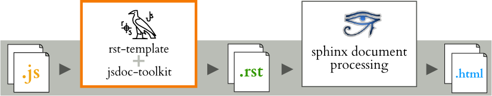

JsDoc Toolkit RST-Template¶
Project provides a RST (ReStructuredText) compliant templates for JsDoc Toolkit documentation generator, making it easy to document project’s JavaScript resources with Sphinx.
With the custom rst -template, it is possible to generate rst-document pages using JsDoc Toolkit. From there, the generated pages can be included as part of documentation, similar to Sphinx autogen feature. The process is shown in the illustration:
Installation¶
Suggested installation steps (unless you already have some of the apps/modules installed)
Install Java and Ant:
- Download Java and extract it for example to /opt/java/
- Download Ant and extract it for example to /opt/apache-ant/
Install JsDoc Toolkit:
- Download release: http://jsdoc-toolkit.googlecode.com/files/jsdoc_toolkit-2.4.0.zip
- Extract package for example to:
/opt/jsdoc-toolkit/
Setup JsDoc Toolkit RST Template
Download the package (not yet available) or checkout the sources:
Open
build.propertiesfor editing and set the directories:- Where to find JsDoc Toolkit
- Where to read javascript sources
- Where to generate rst documents
# Directory where the jsdoc-toolkit is installed jsdoc-toolkit.dir=/opt/jsdoc-toolkit # Directory where to find javascript sources js.src.dir=src/js # Directory where to generate rst files js.rst.dir=dist/rst
Tip
You can also pass these values as a parameter to Ant:
ant -Djs.src.dir=somewhere/else build
Test the setup to ensure everything works:
List Ant tasks:
ant -p
Try out the js conversion by building the .js -sources:
ant build
See the outcode directory defined by
js.rst.dir
Note
This document only describes how to generate RST-files from JavaScript -sources. Please follow the Sphinx -official documentation for how to write and configure documentation.
Usage¶
As it can be seen from the illustration, generating the JavaScript -source API into Sphinx powered documentation, it requires a tool chain:
Comment your code¶
Javascript source code, commented using JsDoc Toolkit commenting conventions.
/**
* @class
* Comment block
*
* @param {string} name Unique name for the app
*/
var App = function (name) {
// @default "Anonymous"
this.name = name || 'Anonymous';
};
/**
* Runs the app
* @returns {App} itself bac
*/
App.run = function() {
return this;
}
Generate API documents¶
Build RST documents from source code with either directly with JSDoc Toolkit or Ant script:
ant -Djs.src.dir=src/myapp -Djs.rst.dir=doc/api/myapp build
After generating the source code with custom template, the outcome is something like (in this case, the file name is
api/myapp/symbols/App.rst):
.. js:class:: App (name)
Comment block
:param string name:
Unique name for the app
.. js:function:: App.run ()
Runs the app
Note
You may edit the generated RST API documents, if you like. However, that prevents you re-generating the documents from the sources again (unless you are willing to do some manual merging). Which approach you should use, depends on needed documentation.
Write documentation¶
Now, both generated and manually written documentation can be used together. The documentation structure may be as follows:
conf.py
index.rst
api/
index.rst
symbols/
_global_.rst
App.rst
To include API documents in Sphinx document tree, the suggested method is to set api/index -toctree
somewhere in master document:
.. toctree::
api/index
Then, you may refer documented classes, functions and other JavaScript elements by using Sphinx notation:
The application is implemented in class :js:class:`App`,
where as the actual processing is done in :js:func:`App.run`.
To see the complete API, see :ref:`separate API document <api>`.
Examples¶
Following documents are generated using the RST template:
License: MIT¶
This piece of software is MIT licensed. It means you can freely take it, hack it and break it - both in personal and commercial use.
This also means your contribution is welcome